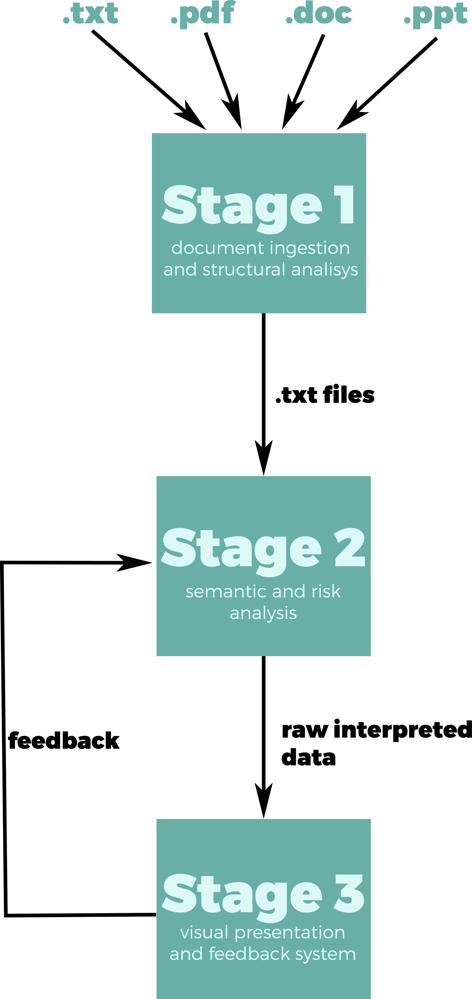

Project Background
In a Merger and Acquisition (M&A), lawyers have to go through a lot of legal documents to ensure that the deal does not bring harm to the company in the form of flawed terms and conditions. This is the reason why it is important to have a reliable documents filter system to ease the workload. The system has 3 main features: ingestion, analysis and presentation. The first part of the system takes in documents of certain formats (we are aiming for pdf file, plain text files, Microsoft word and Microsoft Powerpoint documents) and scans through the documents to identify the headers and sub-headers. It then exports the documents in plain text files including the added headers and sub-headers identifier for the second part of system to do work. The second part of the system not only groups the documents according to the clusters, it also does semantic checking to analyse the risk of the documents. The system is 'smart' because it will 'learn' as the process of feeding in documents progresses. That is, it will become more efficient in both identifying the clusters and analysing the risk. We are responsible to work on the last part of the system that is to present the results of the analysis to the user (lawyer), allowing the user not only to view, but also to provide feedback that will be input into the system to improve the accuracy and the level of intelligence. For that purpose, we are designing a web app that is both informative and simple to use.
